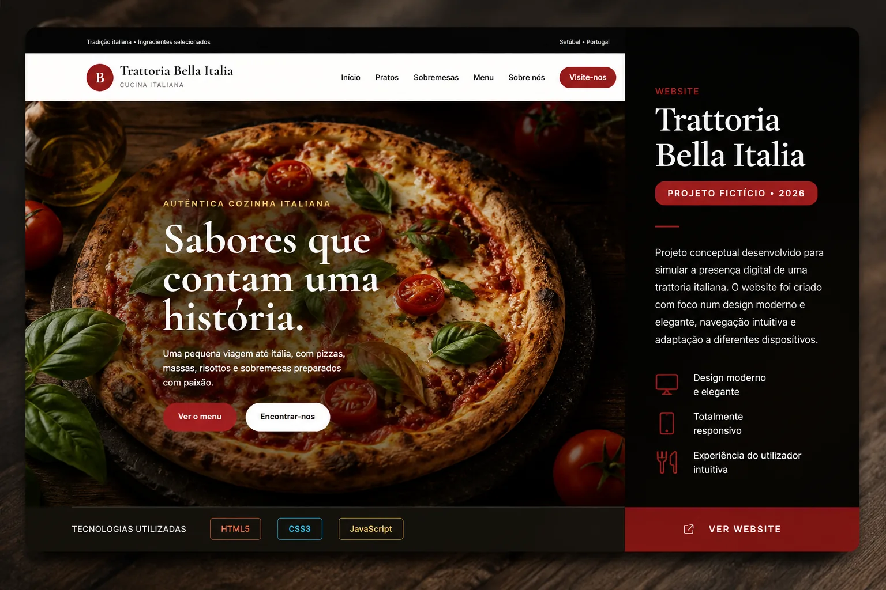
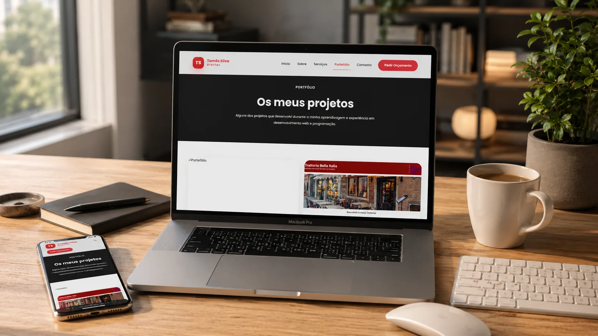

Design personalizado
Um website adaptado à identidade, ao público e aos objetivos do teu negócio.
Crio websites modernos, rápidos e personalizados, que valorizam a tua marca, transmitem profissionalismo e facilitam o contacto com novos clientes.
Uma presença digital pensada para transmitir confiança e facilitar o contacto com potenciais clientes.
Um website adaptado à identidade, ao público e aos objetivos do teu negócio.
Uma experiência cuidada em telemóveis, tablets e computadores.
Desenvolvimento com atenção ao peso das páginas e ao carregamento eficiente.
Possibilidade de acompanhamento, melhorias e atualizações após a entrega.
Três opções para começares. O valor final depende das funcionalidades e da complexidade do projeto.
Uma presença online simples e profissional.
Mais espaço para mostrar os teus serviços.
Uma solução adaptada a necessidades específicas.
* Formulário sujeito a configuração técnica. Domínio, alojamento, integrações e manutenção são definidos no orçamento.
Desde negócios locais a profissionais independentes, cada projeto tem necessidades diferentes.
Menus, horários, localização e formas simples de contacto.
Serviços, galeria de trabalhos e acesso a marcações ou contactos.
Apresentação de serviços, projetos e pedidos de orçamento.
Portefólio de obras, especialidades e contacto comercial.
Catálogos, produtos e diferentes formas de receber pedidos.
Credibilidade, apresentação de serviços e contactos acessíveis.
Alguns dos projetos que desenvolvi recentemente, desde projetos conceptuais até trabalhos reais para negócios locais.

Website desenvolvido para o restaurante Estrela do Sado, com menu, contactos e marcações, localização com Google Maps e um design totalmente responsivo.

Projeto conceptual para uma trattoria italiana, criado com foco num design elegante, navegação intuitiva e adaptação a diferentes dispositivos.
Ver Website
Website pessoal desenvolvido para apresentar os meus serviços, competências e projetos de desenvolvimento web.
Ver PortefólioConta-me a tua ideia e encontramos uma solução adequada.
Tenho 17 anos e sou estudante do Curso Técnico de Gestão e Programação de Sistemas Informáticos. Gosto de desenvolver websites modernos, rápidos e responsivos, procurando sempre criar soluções elegantes e funcionais.
Neste portefólio apresento alguns dos projetos que desenvolvi e continuo diariamente a aprender novas tecnologias para evoluir como programador.
Cada website é desenvolvido com atenção ao detalhe, garantindo qualidade, desempenho e uma excelente experiência para o utilizador.
Converso com o cliente para compreender os objetivos, o público-alvo e as necessidades do projeto.
Desenvolvo um design moderno, intuitivo e totalmente adaptado à identidade do projeto.
Programo o website utilizando tecnologias atuais, garantindo rapidez e compatibilidade com todos os dispositivos.
Verifico todos os detalhes para garantir que o website funciona corretamente antes da entrega.
O projeto é publicado e permanece disponível para futuras melhorias ou atualizações.
Respostas simples antes de começares o teu projeto.
Os websites essenciais começam nos 149 € e os profissionais nos 299 €. O valor final depende das páginas, conteúdos, funcionalidades e integrações necessárias.
O prazo é definido depois de conhecer os requisitos e receber os materiais necessários. Será combinado antes do início do projeto.
Sim. O design é desenvolvido para se adaptar a diferentes tamanhos de ecrã.
Não estão automaticamente incluídos nos valores de referência. As opções e os respetivos custos são explicados no orçamento.
Sim. As revisões e o seu âmbito são definidos na proposta para que saibas o que está incluído antes de avançar.
Posso avaliar necessidades de manutenção e atualizações. O acompanhamento e eventuais custos são combinados separadamente.
Atualizações de conteúdos, pequenas alterações e acompanhamento técnico, com planos mensais indicativos desde 20 €.
Fala comigo sobre a tua ideia e vamos encontrar a melhor solução para o teu website.